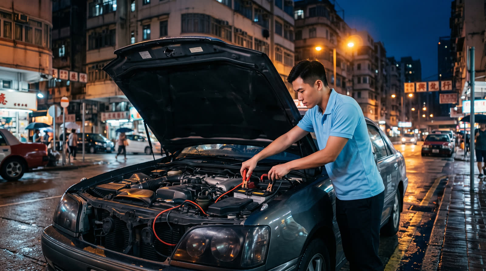

24V 貨車電池：規格、價錢、冇電點做
貨車、拖頭、泥頭車多數係 24V 系統，同私家車完全唔同處理。呢頁講系統結構、規格四項、價錢因素同冇電時嘅正確做法。
24V 貨車電池多數由兩粒 12V 串聯，規格睇 Ah、CCA、尺寸同極柱；價錢視乎型號，講車型即報實價。冇電唔可以用私家車線照夾，24V 搭電 $5XX 起，15 至 20 分鐘到場。
24 小時接聽；商用車停機損失大，唔好等。
系統
24V 系統點解唔可以只換一粒？
貨車嘅 24V 系統，通常由兩粒 12V 電池串聯而成：總電壓 24V，電流規格比私家車高一截。所以換電時兩粒要同一規格、同一批，新舊混用會令舊嗰粒拖累新嗰粒，壽命即刻縮短。
亦因為係串聯，接電方式同私家車唔同：唔可以用 12V 救車線照夾，亦唔可以逐粒夾。要用 24V 專用設備，或者由技師處理。
常見錯誤：用私家車過江龍夾 24V 貨車，輕則燒保險絲，重則燒發電機或車電腦。維修費遠高於叫一次搭電。
規格
換貨車電池要對邊四個數？
| 規格 | 意思 | 唔對會點 |
|---|---|---|
| Ah | 容量，商用車一般比私家車大 | 容量不足，尾板、冷藏機等設備會扯電 |
| CCA | 冷啟動電流，柴油引擎要求高 | CCA 唔夠，凍天或寒夜撻唔著 |
| 尺寸 | 長闊高，要裝入固定架 | 裝唔落或固定唔實，震動會鬆樁頭 |
| 極柱位置 | 正負極左右，同原車線位要對 | 接線長度唔夠，強行拉線有短路風險 |
電壓參考：靜止約 25.2 至 25.6V（每粒 12V 約 12.6 至 12.8V）；引擎運行時約 27.6 至 29.6V。低於呢個範圍，先驗充電系統，唔好即刻換電。
車型
邊種商用車用 24V？
貨櫃車／拖頭
多數兩粒或以上，位置喺車側或座位後；長時間停泊要留意暗電流。
泥頭車／自卸車
工地粉塵多、震動大，樁頭易鬆；建議每次保養順手檢查固定架。
重型貨車（5.5 噸以上）
柴油引擎 CCA 要求高，電池老化時起動會明顯變慢。
冷凍車／起重機
附加設備長開扯電，電池負擔比普通貨車大。
價錢
貨車電池價錢由邊四樣決定？
- 容量同 CCA —— 商用車電池大，價錢自然高過私家車。
- 數量 —— 兩粒串聯要換一對；拖頭可能更多。
- 牌子同保養期 —— 同規格下保養期長嘅貴少少。
- 位置同工時 —— 要拆踏板或護板嘅車型，工時較長。
冇劃一價：「貨車電池幾錢」要睇 Ah、CCA 同數量，所以我們唔會報一個籠統數字；講低車型同舊電池型號，就報到你部車嘅實價。搭電價就固定：24V $5XX 起。
冇電
貨車冇電有邊四步保住生意？
- 1
唔好連續撻車
試兩次唔著就停手。連續撻會令電池更放電，起動馬達亦容易過熱。
- 2
唔好夾私家車線
24V 系統唔可以照夾，呢一步錯咗可能燒發電機，維修費遠高於搭電費。
- 3
打 5368 3668 講車型同位置
講清楚係貨櫃車、拖頭定泥頭車，同埋位置（碼頭、工地、停車場層數）。
- 4
24V 技師到場搭電
15 至 20 分鐘到場，24V 搭電 $5XX 起；撻著後建議即刻安排驗電同換電。
保養
商用車電池有邊四個日常習慣？
- 每星期目視檢查 —— 睇樁頭有冇氧化、固定架有冇鬆、外殼有冇脹。
- 唔好長泊唔熄設備 —— 尾板、冷藏機、車 cam 長開會慢慢扯乾電池。
- 換電換一對 —— 兩粒串聯同時換，避免新舊混用。
- 驗充電電壓 —— 引擎運行 27.6 至 29.6V 才算正常，低於就要驗發電機。
地區
貨櫃碼頭同工地有冇得上門？
24V 商用車服務覆蓋全港：貨櫃碼頭、工業邨、地盤、機場附近、新界各區同香港島。元朗、屯門、荃灣、土瓜灣等查詢最多嘅地區，搭電平均 15 至 20 分鐘到場。
工地或碼頭有出入登記要求，落單時講清楚閘口同車輛類型，我哋會預時間。

常見問題
貨車電池，車主最常問咩？
貨車電池幾錢？
視乎 Ah、CCA、尺寸、牌子同數量（部分重型車用兩粒以上），冇統一價。講車型、年份同舊電池型號，即報實價。
24V 電池規格點睇？
四個數：Ah、CCA、尺寸（長闊高）、極柱位置。兩粒串聯要同規格、同一批，新舊混用會縮短壽命。
24V 電池電壓幾多先正常？
靜止約 25.2 至 25.6V；引擎運行約 27.6 至 29.6V。低於範圍先驗充電系統，唔好即刻換電。
貨車冇電可以用私家車線搭電嗎？
唔建議。24V 電壓同電流都唔同，照夾有機會燒保險絲、發電機或車電腦。要用 24V 專用設備，或叫搭電 $5XX 起。
拖頭電池同貨車電池一樣嗎？
同屬 24V，但數量、尺寸同位置唔同；拖頭多數兩粒以上，換電要一對換，唔可以只換一粒。
泥頭車電池要注意咩？
工地粉塵多、震動大，樁頭容易鬆同氧化；定期檢查樁頭同固定架。冇電同樣要 24V 設備搭電。
貨車換電要幾耐？
一般 30 至 45 分鐘，視乎電池數量同位置；部分車型要拆踏板或護板，時間會長啲。
貨車電池沒電有咩先兆？
起動變慢、夜間燈光偏暗、尾板或冷藏機啟動無力。商用車停機損失大，出現兩項就唔好等。
貨車電池充電要幾耐？
合適充電器慢充一般 8 至 12 小時；唔好用私家車充電器充 24V。趕出車可先搭電，但長遠要驗發電機同電池健康。